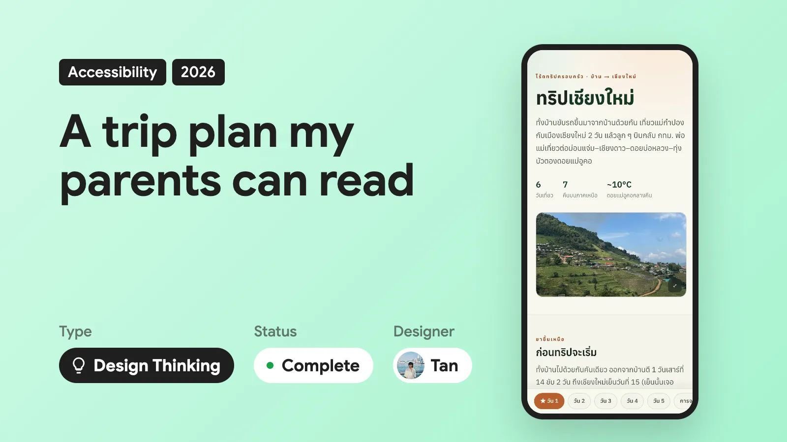
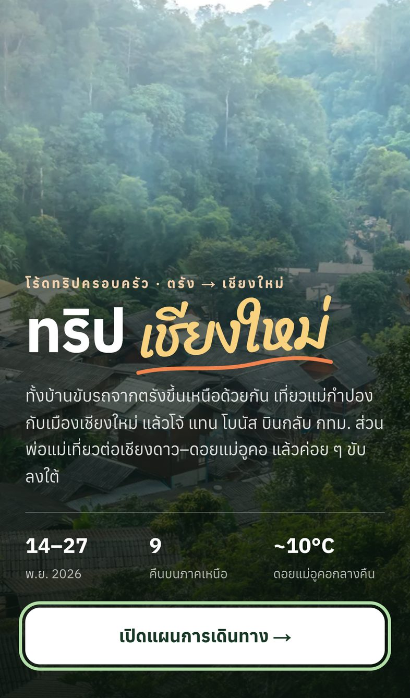
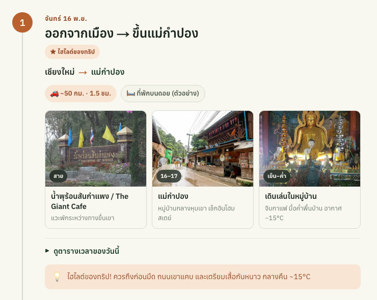
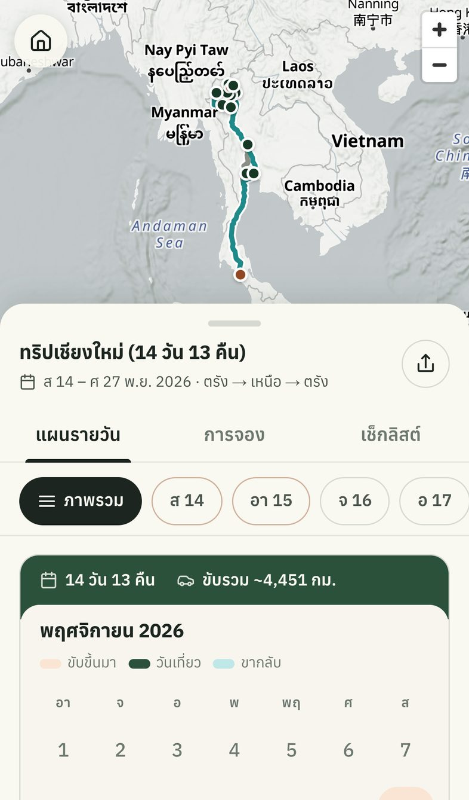
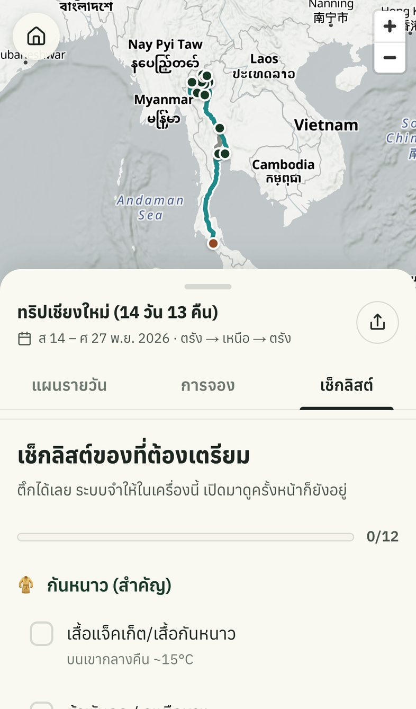
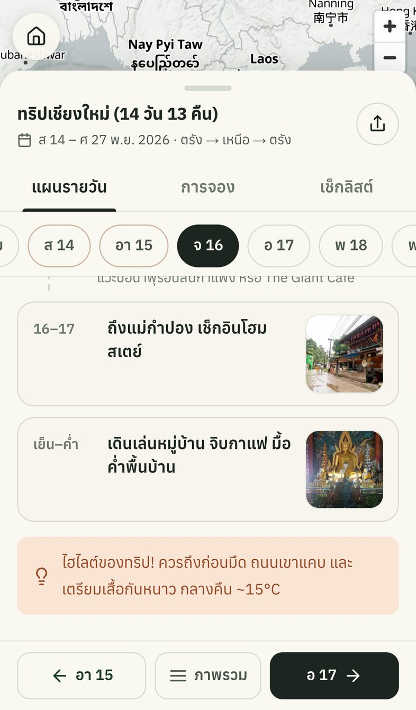
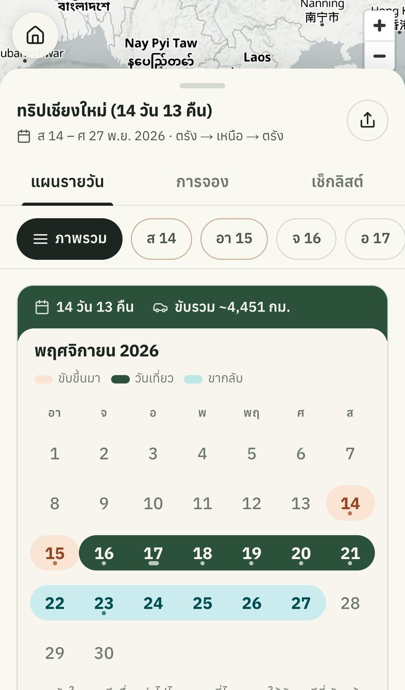

A trip plan my parents can read
A five-day trip page for my parents, where every design decision traces back to one constraint: the readers are sixty and on a phone.

I plan the trip, my parents read it. One page, opened on a phone, that shows where we go each day, where we sleep, what to pack, and which parts still need their say.
The real reader isn't the maker, and that changed almost every decision
The designer is in his thirties. The people who actually read it are parents in their sixties, checking it on a phone in the early evening.

If I designed for what's comfortable for me to read, it would come out as small grey text on bright white. That looks nice to the maker and is unreadable for the people who actually use it.
Modern web defaults are hard to read at 60
Default font sizes, tight line height and light grey text are tuned for the eyes of people at work, not for people who have started holding their phone at arm's length.
A wall of cards doesn't show the order of a trip
A trip has a clear day-by-day order, but a card grid makes every day look the same. Readers have to work out in their heads what comes first.
The stock look of travel sites
Sky blue, turquoise, sunset orange and big numbers on gradients. The brain reads that palette as a tour operator instantly, and it would make a page made for my parents look like a package-tour ad.
Some things are still my parents' call
Not every part of the plan is settled, but a typical page presents everything as final, so readers can't tell where their opinion still counts.
Colour chosen from where it's used, not from the content category
The scene I pictured: my parents on the sofa in the early evening, warm lamps on, opening the plan on a phone. The whole palette was chosen from that scene.

Pine green and terracotta instead of turquoise
Pine green comes from the northern mountains, tea and coffee; terracotta brings Lanna warmth. It deliberately avoids the default travel palette.
Large type and high contrast by default
A larger base size than usual, relaxed line height, and dark text on warm paper rather than light grey on bright white.
A vertical timeline as the backbone
The structure is a five-day sequence, not a card grid. A connecting line and numbered day markers show the order at a glance, without reading the headings.
My parents told me which day was the highlight, so the page has to show it. That day gets different space and a marker, instead of every day looking the same because a design system says to be consistent. Consistency that erases what users said matters is the wrong kind of consistency.
What makes it a tool, not just something to read
If it were only for reading, a text message would do. These three things are why it had to be a web page.


A five-day timeline with routes and stays
The whole trip on one page: where we sleep each night, and each leg's distance described in terms you can picture, not raw numbers.
A packing checklist that remembers your ticks
Close the page, come back later, and ticked items are still ticked. It's stored on each person's own device: no account, and no data leaves the phone.
A section that says plainly what's still open
It separates what's decided from what's still open, so my parents know where their opinion still counts instead of guessing.
What this project ruled out
Written before designing, and used as the tiebreaker whenever I was tempted to add another flourish.

- No coloured left border on callouts — callouts use a light background and a leading icon instead, because the left border is so common it no longer signals anything
- No gradient text — gradients on letters make contrast unpredictable, which goes straight against this project's core constraint
- No frosted glass just because it's available — it lowers the contrast of the text on top, in exchange for a modern feel these readers don't need
- No dashboard-style row of big numbers — a family trip isn't a report, and big stats make it feel like work
- Spacing with rhythm, not uniform — equal spacing everywhere reads flat and doesn't show what belongs together
- Gentle motion that respects device settings — if you've turned off motion in your system, this page stays still
What I learned from having just two real users
Few users, but clearly defined, give sharper input than guessing at a large, faceless audience.

- Knowing exactly who the reader is makes choices fast — questions like what font size to use, or whether to add an effect, get answered on the spot without debate
- Accessibility isn't a check at the end — here it was the starting constraint that set the whole palette and type scale, which gives a very different result from auditing at the end
- Information structure should mirror the story — a trip has an order, so the page needs one. Choosing a timeline over a card grid was a content decision, not a visual one
- Showing what's undecided turns readers into co-decision-makers — a small detail that shifts the feeling from being told the plan to planning it together